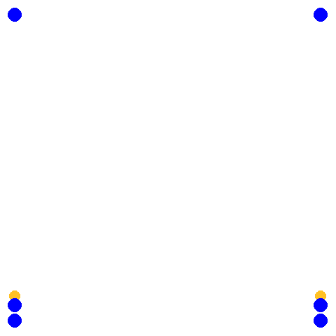

Komplex
Diagonalspiel
Auf beiden Feldhälften wird eine Mannschaft mit mindesten 3 Spielern aufgestellt. Benötigt wird ein Zuspieler auf Position 2 ein Angreifer auf Position 4 und ein Abwehrspieler auf Position 5. Der Ball wird durch einwerfen ins Spiel gebracht. Danach wird der Ball ausgespielt und (leicht) diagonal angegriffen. Nachdem der Ball das Netz überquert hat, rotiert die Mannschaft eine Position weiter und auf der anderen Feldhälfte wird der Ball ausgespielt und nach dem diagonalen Angriff ebenfalls eine Position weiter rotiert. Nach einem Fehler wird der Ball möglichst schnell wieder ins Spiel gebracht. Falls mehr Spieler vorhanden sind, werden weitere Positionen aufgefüllt beginnend mit Position 6.
- Spieler auf Position 4 beginnt in Blockposition am Netz und zieht sich erst beim Zuspiel vom Netz zurück.
- Die Richtung wird gewechselt
- Alle Spieler gehen zur Angriffssicherung
- Der Zuspieler versucht zu blocken um die Anggriffssicherung zu testen
Kreisel
Vierer Kreisel
Vier Spieler verteilen sich wie folgt aufs Feld: Ein Zuspieler auf Position 3, jeweils ein Angriff/Abwehrspieler auf Position 2 und 4 und ein Abwehrspieler auf Position 6. Der Zuspieler Spielt immer abwechselnd auf Position 2 oder 4. Von dieser Position wird diagonal Angegriffen. Der nicht angreifende Netzspieler zieht sich zurück (ca. 3-Meterlinie) der Spieler von Position 6 schließt an, so dass sie sich nicht behindern. Die Abwehr erfolgt zum Zuspieler der nun den Ball wieder zuspielt usw…
Wichtig ist darauf zu achten, dass die Spieler immer wieder auf ihre Position zurückkehren, damit vor jeder Abwehr eine Bewegung erfolgt
- Der Zuspieler spielt nicht abwechselnd, sondern zufällig auf Position 2 oder 4.
- Angriff im Sprung
- Zuspiel im Sprung
Fünfer Kreisel
Wie Vierer Kreisel nur stehen auf Position 6 zwei Spieler, die verschieben. Auf die Abstimmung zwischen den Spielern achten
Sechser Kreisel
Achter Kreisel
Wie Sechser Kreisel, mit der Ausnahme, dass es einen oder zwei dedizierte Zuspieler gibt, der von außerhalb des Feldes einläuft.
Angriff-Abwehr mit schauen
Diese Übung wird in 3-er Gruppen durchgeführt. Die Übung beginnt mit Aufschlag über das Netz. Der Ball wird mit folgenden Zusatzregeln ausgespielt:
- es darf nur diagonal angegriffen werden
- es darf nur über Position 2 und 4 angegriffen werden. Die Mitte greift also nie an!
Ziel der Übung ist, dass sich die abwehrende Mannschaft frühzeitig auf dem Feld richtig orientiert. Also wenn der Spieler in der Mitte annimmt/abwehrt und von der 2 zugespielt wird, muss von der 4 angegriffen werden. Die Abwehrspieler können sich also schon vor dem Zuspiel in die Diagonale zur gegnerischen 4 bewegen und dort auf die Abwehr vorbereiten.
Falls mehr als 6 Spieler anwesend sind wird einfach mannschaftsweise durchrotiert.
- Darauf achten, dass die Spieler das gegnerische Feld beobachten und reagieren, sobald klar ist von wo der Angriff erfolgt.
- Spieler stehen in richtiger Abwerhposition und bewegen sich nicht mehr wenn geschlagen wird.
- 1-3 zusätzliche Blockspieler können ebenfalls üben sich frühzeitig zu bewegen
- anstatt diagonal, zeigt der angreifende Spieler die Richtung an
Aufschlag-Annahme-Angriff-Abwehr
Feldhälfte A:
- ein Zuspieler
- 2 Annahmespieler
- ein Angreifer
- eine Warteposition
Feldhälfte B:
- ein Abwehrspieler
- 1 Aufschläger
- 1 Warteposition
Bis auf den Zuspieler in Feldhälfte A rotieren alle Spieler nach jedem Ball eine Position weiter. (Grob folgt man immer dem Ball)
Der Ablauf ist wie folgt:
- Aufschlag über das Netz in Feldhälfte A (Annahmespieler)
- Annahme zum Zuspieler
- Zuspiel auf den Angreifer (Position und Art des Zuspiels vorher festlegen)
- Angriff auf den Abwehrspieler
- Abwehr zu sich selbst und den Ball fangen
- Alle rotieren eine Position weiter und wieder Aufschlag
Es können bei dieser Übung diverse Sachen geübt werden:
- Zuspiel (mit laufen)
- Technik Angriff
- Annahme und Abstimmung zu zweit
- Abwehr (frühtzeitiges erkennen der Schlagrichtung und Positionierung zum Angreifer)
- Abwehrtechnik
- Verschiedene Angriffsoptionen (Aussen Mitte über Kopf)
- Der Zuspieler läuft von Position 1, oder 4/5
- Annahme Spieler gehen zur Angriffssicherung
- Zusätzliche Spieler können noch z.B.
- einen Block stellen (1-2 Spieler)
- zusätzliche Abwehrspieler
- zusätzlicher Annahme Spieler
- etc..
Vier Ecken
1 Zuspieler, 1 Angreifer, 3 Abwehrspieler. In jeder Ecke des Feldes steht ein Angreifer/Abwehrspieler. Der Zuspieler beginnt das Spiel in dem er aus der Mitte des Feldes den Ball hoch zum Angreifer spielt. Dieser greift diagonal an. Die restlichen Abwehrspieler schließen zum Spieler in der Diagonalen Ecke auf und wehren den Ball zum Zuspieler in der Feldmitte ab. Der abwehrende Spieler wird zum neuen Angreifer (in seiner ursprünglichen Ecke) und die verbliebenen Spieler schließen zum Spieler in der diagonalen Ecke auf. Immer so weiter.
- Abwehrspieler bewegen sich frühzeitig und stehen in Abwerhposition wenn geschlagen wird
- Zuspieler erkennt schnell die richtige Position und bewegt sich zielstrebig dorthin
- Zuspieler steht richtig zum Ball und spielt entlang der Körperachse
- Angriff im Sprung
- Zuspiel im Sprung
Diagonal Angriff mit Nachlaufen
Jeweils ein Spieler auf Position 1-5 die restlichen Spieler stellen sich hinter Position 6 an. Der Ball wird durch Einwurf von Position 6 auf Position 3 ins Spiel gebracht und der Spieler von Position 6 läuft auf Position 3. Position 3 spielt den Ball auf Position 2 oder 4 (z. B. abwechselnd) und folgt seinem Ball. Position 2 oder 4 schlagen den Ball (leicht) auf Position 1 oder 5 und folgen ihrem Ball. Position 1 und 5 wehren auf Position 3 ab und stellen sich hinter Position 6 an. Position 6 läuft auf Position 3 ein, sobald 3 den Ball nach vorne oder über Kopf gespielt hat.
Longline Pritschen, diagonal Baggern mit Nachlaufen
Alle vier Ecken eines Feldes werden besetzt in den Ecken am Netz stehen jeweils 2 Spieler hintereinander. Die vorderen Spieler am Netz haben jeweils einen Ball und beginnen damit den Ball longline zu spielen und dem eigenen Ball nach zu laufen. Die Spieler auf Position 1 und 5 baggern den Ball diagonal zum jeweils verbliebenen Spieler am Netz und folgen ihrem Ball. Der Spieler am Netz spielt nun wieder longline und folgt seinem Ball. Dies wird solange wiederholt bis ein Fehler passiert
- Oberes Zuspiel im Sprung
